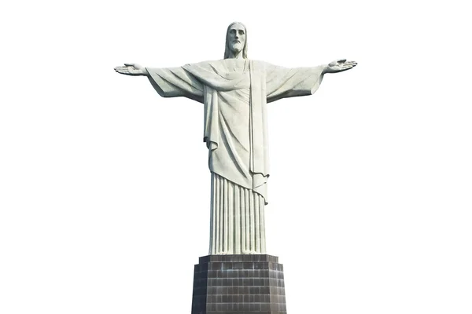

Christ the Redeemer is an iconic statue located in Rio de Janeiro, Brazil. It is considered one of the world's most recognizable landmarks and has become a symbol of the city and its people,The statue stands 98 feet tall, and the arms stretch 92 feet wide, making it one of the largest statues of Christ in the world,The statue depicts Jesus Christ with his arms outstretched, standing atop the Corcovado mountain and overlooking the city below.
Christ the Redeemer is not only an impressive work of art but also a symbol of religious and cultural significance. The statue represents the Christian faith and serves as a reminder of Brazil's deep Catholic roots,It is also a symbol of hope and redemption, as Christ is depicted with his arms outstretched, welcoming all who come to him.
.
Do you want to learn more about Christ the Redeemer?